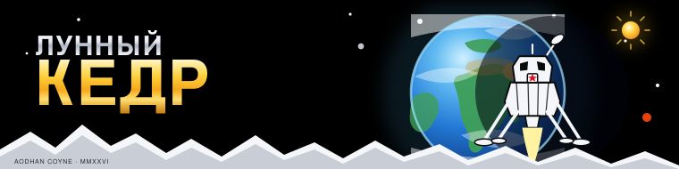
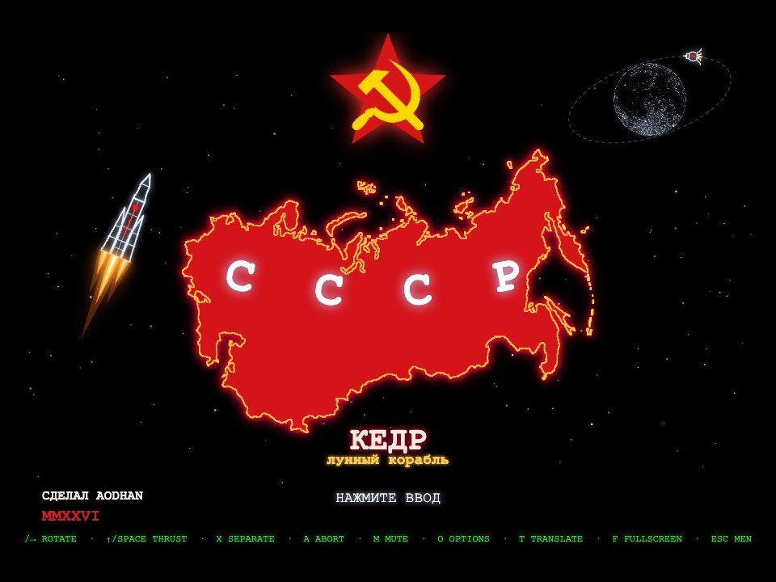
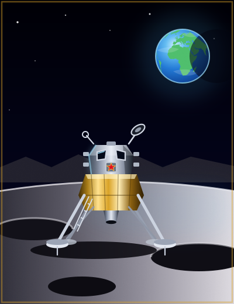
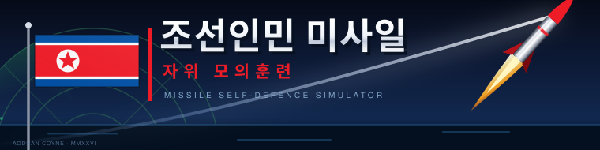
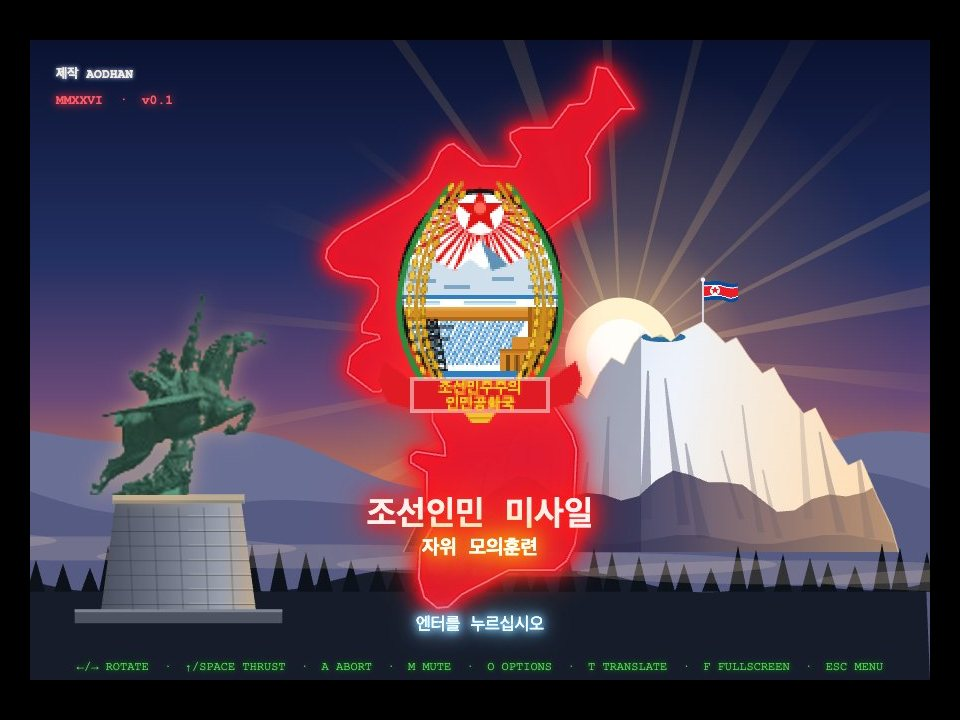
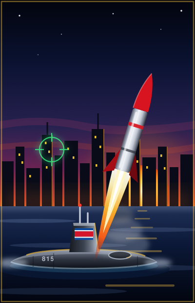
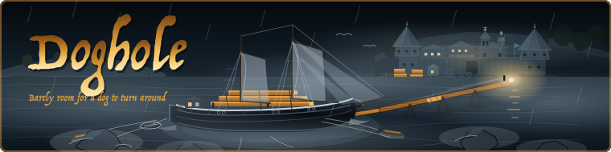
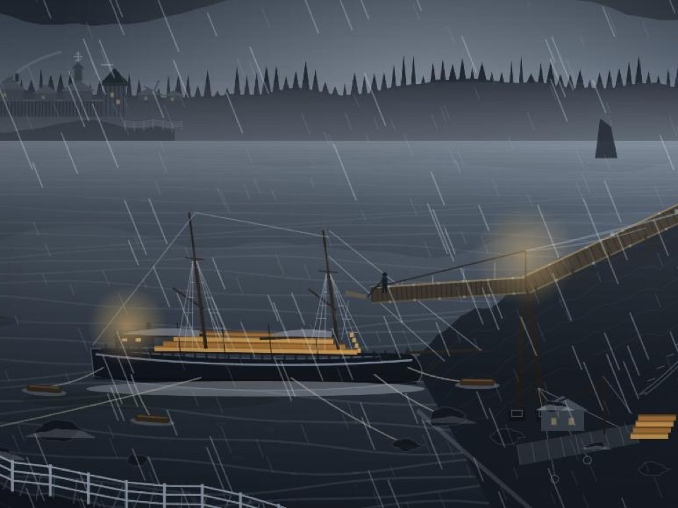
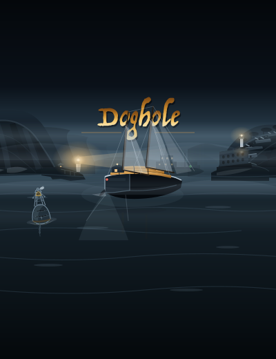

  THRUST ←→ rotate↑ thrusta abort ⛶ Fullscreen↗ New tab■ Stop  Insert Coin Play full speed ↗ShareSource
  TRACK ←→ aim↑ thrusto options ⛶ Fullscreen↗ New tab■ Stop  Insert Coin Play full speed ↗ShareSource
  HELM ←→ helm↑ make sailspace pass a line ⛶ Fullscreen↗ New tab■ Stop  Insert Coin Play full speed ↗ShareSource